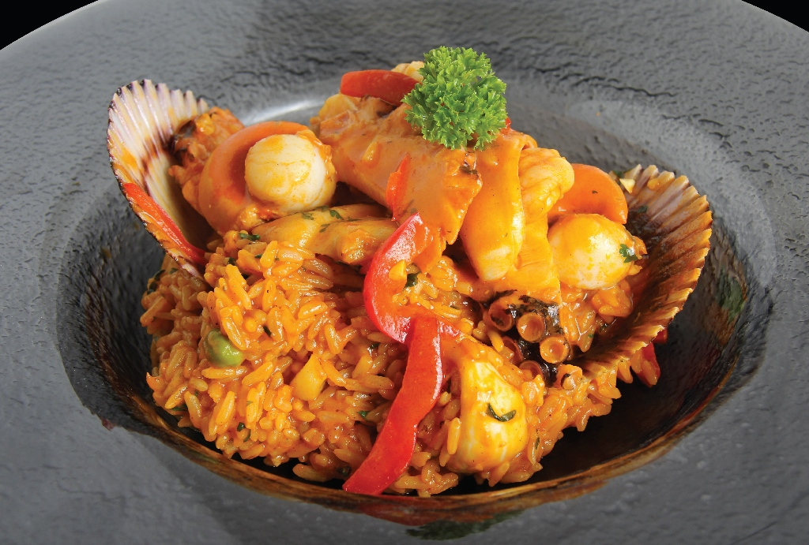
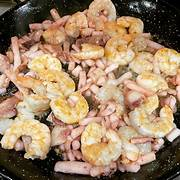
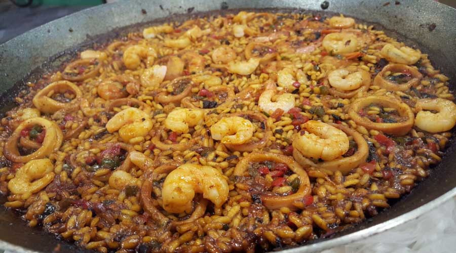
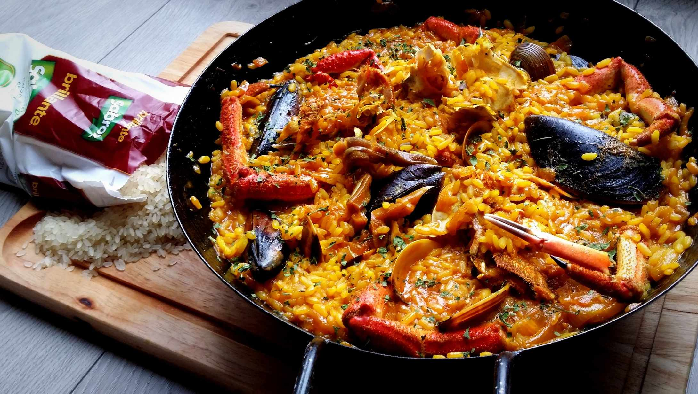
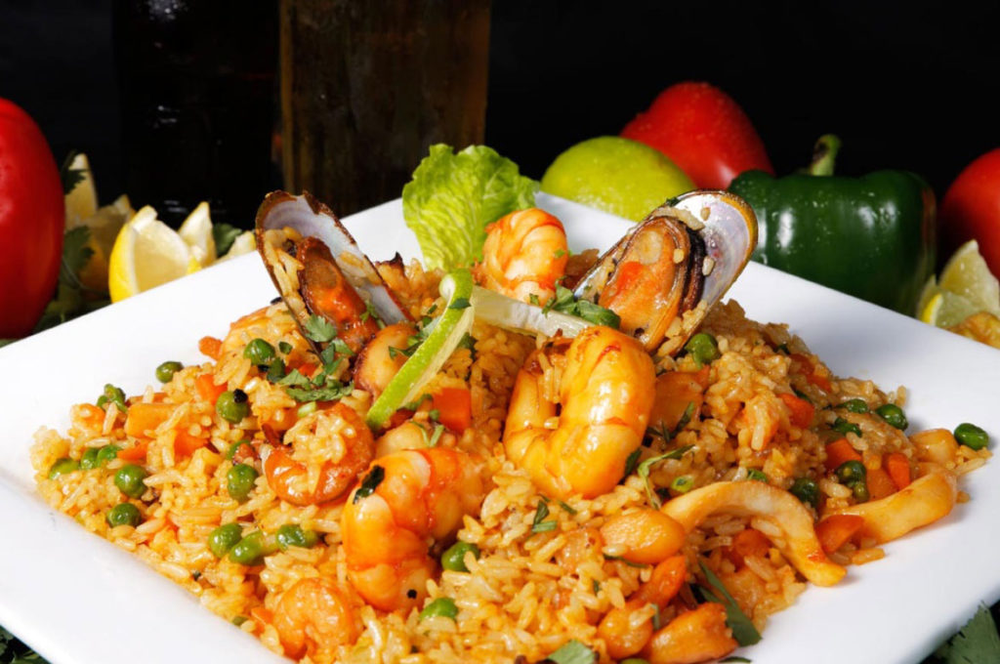

Sabor Criollo
Sabores peruanos que conquistan el corazón
Sabores peruanos que conquistan el corazón

El Arroz con Mariscos es uno de los platos marinos más queridos del Perú. Su combinación de camarones, calamares, choros, conchas y arroz salteado con ají panca crea un sabor profundo y delicioso. Es un plato festivo, colorido y lleno del auténtico toque peruano.




Aprende paso a paso cómo preparar un delicioso Arroz con Mariscos estilo peruano.